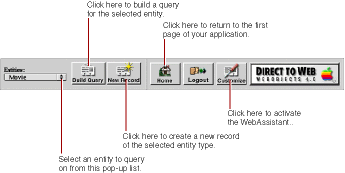

PATH
Documentation > WebObjects 4.5 >
Tools and Techniques
Dynamically Generated Pages
Besides the login page, there are nine types of dynamically-generated pages (or reusable components) in a Direct to Web application:
-
A query-all page
that displays all entities that are currently exposed and lets users construct queries on the attributes (but not the relationships) of those entities; see
Query Pages
. The properties of this page cannot be customized.
-
A query page
that allows the user to construct a query for a particular entity; see
Query Pages
.
-
A list page
that displays one or more records of a particular entity in tabular form. List pages and select components are implemented with the same components; see
List Pages and Select Components
. The result of a query is always a list page.
-
An inspect page
that displays a single record of a given entity. Inspect pages and edit pages are implemented with the same components; see
Inspect and Edit Pages
.
-
An edit page
that displays a single record of a given entity and also allows you to make changes to the record and save it to the database. Edit and inspect pages are implemented with the same components; see
Inspect and Edit Pages
.
-
A select component
that lets users select a record from a list, thereby adding it to a relationship or populating an edit component with it. List pages and select components are implemented with the same components; see
List Pages and Select Components
.
-
A confirm page
that prompts users to confirm that they want to delete records. The properties of this page cannot be customized.
-
An edit-relationship page
is a multiple component page for removing and adding objects to a relationship. See
Edit-Relationship Pages
.
-
An error page
for displaying information related to exceptions and other errors. The properties of this page cannot be customized.
All pages in your application contain the standard Direct to Web header (defined in MenuHeader.wo
) at the top of the page. This header provides a number of controls, described in the following figure.

For best results when navigating through a Direct to Web application, don't use your web browser's backtrack buttons. Instead:
-
To return to the previous page from an edit or inspect page, click Cancel.
-
To return to a query page from a list page, click Return.
© 1999 Apple Computer, Inc. – (Last Updated July 27 99)